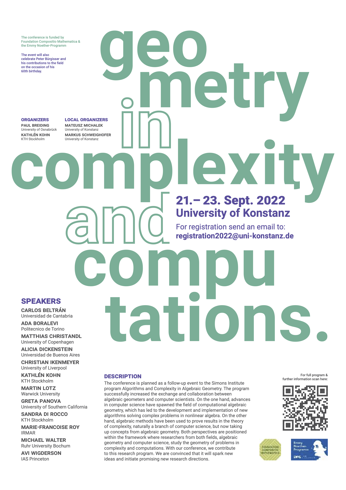

GEOMETRY IN COMPLEXITY AND COMPUTATIONS.
University of Konstanz, 21.-23. September 2022.
University of Konstanz, 21.-23. September 2022.
|
This is the website for the Conference Geometry in Complexity and Computations.
It will take place on September 21.-23., 2022, at the University of Konstanz. The conference is partly funded by Foundation Compositio Mathematica. The event will also celebrate Peter Bürgisser and his contributions to the field on the occasion of his 60th birthday.
|
 |

Description
The conference is planned as a follow-up event to the Simons Institute program Algorithms and Complexity in Algebraic Geometry. The program successfully increased the exchange and collaboration between algebraic geometers and computer scientists. On the one hand, advances in computer science have spawned the field of computational algebraic geometry, which has led to the development and implementation of new algorithms solving complex problems in nonlinear algebra. On the other hand, algebraic methods have been used to prove results in the theory of complexity, naturally a branch of computer science, but now taking up concepts from algebraic geometry. Both perspectives are positioned within the framework where researchers from both fields, algebraic geometry and computer science, study the geometry of problems in complexity and computations. With our conference, we contribute to this research program. We are convinced that it will spark new ideas and initiate promising new research directions.Registration
For registration send an email to registration2022@uni-konstanz.de.Organizers
Paul Breiding, University of Osnabrück.Kathlén Kohn, KTH Stockholm.
Local Organizers
Mateusz Michalek, University of Konstanz.Markus Schweighofer, University of Konstanz.
Speakers and Schedule
Wednesday, September 21.| 09:00 - 10:15 | 10:45 - 12:00 | 14:00 - 15:15 | 15:45 - 17:00 |
|---|---|---|---|
| Christian Ikenmeyer | Greta Panova | Michael Walter | Kathlén Kohn |
| University of Liverpool | University of Southern California | Ruhr University Bochum | KTH Stockholm |
| Title: Geometric Complexity Theory | Title: Complexity and Algebraic Combinatorics | Title: Invariant theory of maximum likelihood estimation | |
| I will give a short introduction to geometric complexity theory, an approach towards the separation of algebraic complexity classes using algebraic geometry and representation theory, and I will report on several results in the area that appeared since the 2014 Simons Institute program on Algorithms and Complexity in Algebraic Geometry. | The complexity of computing polynomials can be understood via their algebraic and geometric properties and symmetries. Geometric Complexity Theory (GCT) translates these problems to Representation Theory, whereby inequalities between multiplicities of irreducible representations could give computational lower bounds. Such multiplicities are also a subject of study of Algebraic Combinatorics, where the classical but mysterious Kronecker and plethysm coefficients pose some of the main open problems. In this talk we will define the main objects and discuss these connections. | The task of fitting data to a model is fundamental in statistics. A widespread approach is finding a maximum likelihood estimate (MLE), where one maximizes the likelihood of observing the data as we range over the model. For two common statistical settings (log-linear models and Gaussian transformation families), we show that that approach is equivalent to a capacity problem in invariant theory: finding a point of minimal norm in an orbit under a corresponding group action. The latter problem has been recently studied in a series of papers co-authored by Peter Bürgisser. We show that the existence of the MLE can be characterized by stability notions under the group action. Moreover, algorithms from statistics can be used in invariant theory, and vice versa. This talk provides an introduction to this dictionary between invariant theory and statistics, which has already led to the solution of long-standing questions concerning the MLE of matrix normal models. This talk is based on joint work with Carlos Améndola, Philipp Reichenbach, and Anna Seigal. |
Thursday, September 22.
| 09:00 - 10:15 | 10:45 - 12:00 | 14:00 - 15:15 | 15:45 - 17:00 |
|---|---|---|---|
| Martin Lotz | Ada Boralevi | Carlos Beltrán | Sandra di Rocco |
| Warwick University | Politecnico de Torino | Universidad de Cantabria | KTH Stockholm |
| Title: Uniform determinantal representations and spaces of singular matrices | Title: When can forward stable algorithms be composed stably | Title: Geometry of Algebraic Data | |
| The problem of expressing a specific polynomial as the determinant of a square matrix of affine-linear forms arises from algebraic geometry, optimization, complexity theory, and many more areas. In this talk I will introduce the notion of "uniform determinantal representation", and derive a lower bound on the size of the matrix, showing a construction achieving that lower bound up to a constant factor as the number of variables is fixed and the degree grows. I will also relate uniform determinantal representations to vector spaces of singular matrices, in particular compression spaces. The paper I will report on is a joint work with van Doornmalen, Draisma, Hochstenbach, and Plestenjak. | Although stability has been widely studied in the mathematical literature, there are very simple questions such as that of the title, which still need an answer. Working on the concept of condition number, we state some widely satisfied hypotheses, depending only on two functions g and h, under which the composition of a stable algorithm for g and a stable algorithm for h is a stable algorithm for the composition g∘h. | It is often convenient to visualize algebraic varieties (and hence systems of polynomial equations) by sampling. The key challenge is to have the right distribution and density in order to recover the shape, i.e the topology of the variety. Bottlenecks are pairs of points on the variety joined by a line which is normal to the variety at both points. These points play a special role in determining the appropriate density of a point-sample. Under suitable genericity assumptions the number of bottlenecks of an affine variety is finite and is called the bottleneck degree. Estimations of the bottleneck degree and certain generalizations lead to efficient sampling techniques. We will show how classical projective algebraic geometry has proven very useful in this analysis. The talk is based on joint work with D. Eklund, P. Edwards, O. Gäfvert, J Hauenstein, M. Weinstein. |
Friday, September 23.
| 09:00 - 10:15 | 10:45 - 12:00 | 14:00 - 15:15 | 15:45 - 17:00 |
|---|---|---|---|
| Marie-Francoise Roy | Alicia Dickenstein | Matthias Christandl | Avi Wigderson |
| IRMAR | Universidad de Buenos Aires | University of Copenhagen | IAS Princeton |
| Title: Divide and conquer roadmap algorithm for basic semi-algebraic sets | Title: Beyond Boolean Networks | Title: Quantum Information and Algebraic Complexity | Title: Permanent & Determinant: non-identical twins |
| In this new step of our long term project on the complexity of roadmaps, we were hoping to be able to use directly our previous work on Divide and conquer roadmaps for algebraic sets. Of course, a significant part of it can be adapted but several new ideas and techniques are needed. The talk will start with an overview of existing complexity results for roadmaps and describe our results in progress. Based on a joint work with Saugata Basu. | I will report on work in progress with Juliana García Galofre, Mercedes Pérez Millán and Reinhard Laubenbacher, which is an invitation to model biological networks with any finite number m of states for every node; in particular, to predict the qualitative behavior of gene regulatory networks. To model the dynamics, we represent each transition function via operations used in multivalued logic, which are intuitive and close to biological interpretations. We generalize several properties of Boolean networks (the case m=2) and we give an algorithm to compute the fixed points of the system, including some complexity considerations. | Quantum Information and Algebraic Complexity are unexpected partners in their use of tensors, asymptotics and representation theory. I will highlight the philosophy, present key results and give an update (maybe including live quantum computing in the cloud), so that we can appreciate the relation that Bohr-Einstein have to Strassen-Bürgisser. | The Determinant is undoubtedly the most important polynomial function in mathematics. Its lesser known sibling, the Permanent, plays very important roles in enumerative combinatorics, statistical and quantum physics, and the theory of computation. In this lecture I plan to survey some of the many remarkable properties of the permanent, its applications and impact on fundamental computational problems, its similarities to and apparent differences from the determinant, and how these relate to the P vs. NP prolem. This lecture is intended to a general Math & CS audience. |